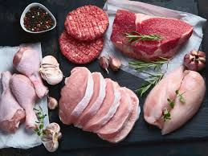

Meat

Fresh Meat
captures an assortment of fresh
high-quality
meats that are sure to elevate
culinary creation.cut boasts vibrant colors
the natural beauty,freshness of the meat.
these fresh meats are the perfect foundation
for creating delicious and unforgettable
that will impress the most discerning palates.
Ingredients
- Fresh beef steaks
- Tender lamb chops
- Succulent pork ribs
- Flavorful chicken breasts
- Juicy ground beef
- Seasonings and marinades of choice
Steps
- Preheat the grill or oven to the desired temperature.
- Prepare the meat by seasoning it with your choice of spices,
marinades. Let it sit for a while to absorb the flavors.
- Grill or roast the meats according to their recommended cooking
times and temperatures Adjust the cooking
time based on your preferred level of doneness.
- Monitor the meat's internal temperature using a meat
thermometer to ensure it reaches the desired level of doneness.
- Once cooked, remove the meat from the grill or oven let it
rest for a few minutes to allow the juices to redistribute.
- Once cooked, remove the meat from the grill or oven and let it
rest for a few minutes to allow the juices to redistribute.
- Serve the freshly cooked meats as the centerpiece of a delicious meal.
Pair them with your favorite sides and sauces
for a complete dining experience.
- In the final example, I've added a "Steps"
heading followed by an ordered list of the steps needed for making the dish
Modify the steps and instructions based on your specific recipe cooking method
Save the changes and commit them to your Git repository.
Regenerate response